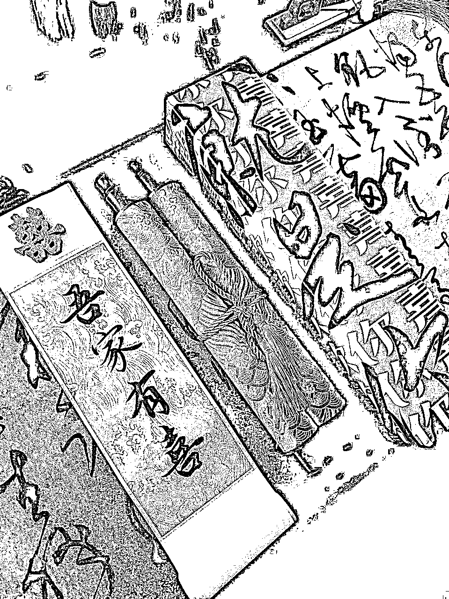

来源：https://l4dbgu9i0d.feishu.cn/docx/RHQ7dXcOpotmmOxkjmwcGqz8n8g
生财圈友，大家好！
见帖欢喜！
我是马有谱，坐标大连。主业是一名星级酒店的销售经理，平时爱好书法，曾经在全国，省市都拿过很多奖项。同时，我也是一位已经加入生财3年多的老圈友了，一直以来都是在潜水，之前尝试过项目，但都没有太好的变现战绩，也就没有发布过干货内容，这里的牛人真的太多太多，平时看到很多大佬的分享都让自己无比佩服。
不久前第一次参加了5月的小红书运营航海，从0到1，3个粉丝开始精准引流变现，但航海结束后，成绩平平。紧接着又参加6月的续航，就在续航1个月时间里，天天有好事，共引流230人，变现2.4w+（现在3.5w+）。
看到很多在航海中没有取得成绩的圈友，像我一样，你可能并不缺少实力，就缺少一次续航的任务，所以不要放弃，持续行动。终能和我一样取得令自己都惊讶的成绩！虽然我这点成绩在大佬们面前不值一提，但这实实在在的正反馈，让我在接下来的行动中更有动力。
在此感谢生财提供这次航海和续航行动机会，让我在兴趣爱好拿到了结果。同时，也特别感谢@梁靠谱对本文的指导，感谢@芷蓝@文静@月落等亦师亦友的大佬们平日里的分享指导和帮助。
第一次发帖，还望圈友们多多指教，感谢阅读！
全文共近7000字，阅读需要10分钟
内容包括四个部分：
一、发现机会，决定下场
二、从航海再到续航，怎样完成代写婚书的闭环
三、从兴趣入手如何快速变现
四、登船入海，生财有术
一、发现机会，决定下场
在今年年初刷小红书时，由于经常刷书法/绘画/国潮之类的博主笔记，平台偶然间给我推了一个博主代写婚书的内容，赞评还都很不错。看了下图片风格和写出的字体，我就觉得这事我也可以试试。
（相信很多人都刷到了这位博主）
于是我就开始做了一番调研，去各平台上了解下正在做这个项目的同行，发现还是在小红书这个平台最有效果，也更容易卖得上价格，像淘宝、拼多多这样的平台，因为人群属性的原因，显然没有太大的优势。
同时，也打开了生财的风向标进行关键字搜索，发现还真的有圈友不止一次的中标这个小项目。但是我在生财全站搜索，却没能发现有做这个项目的，后来大致估算了一下，确实是能结合当下自身优势可以变现的项目。就值得去付出行动。
紧跟着，我就跟@梁靠谱约了电话，说了我想做这个项目，短短的十几分钟，靠谱就给我注入了强大的信心和动力，并给出了行动路径。
靠谱说：“赚到100万之前，不要看宏观。用强者的思维，结合自己的实际，去行动去努力。”所以我就立刻决定拿出精力，争取将这个项目跑通。然后，再借着生财航海这样的机会，跟大家一起扬帆起航，为实现跑通这个项目的目标努力。
二、从航海再到续航，怎样完成账号运营-精准引流-转化-交付的闭环
1）起号
我的账号是在本次航海前，4月末就已经起号了，在前期时，也不是很顺利，不太懂得如何做小红书，每天去发布笔记像发朋友圈，小眼睛也就最多200，长达半个月的时间我都是0粉的状态，赞评也少得可怜。那个时候就是看对标账号，对方怎么做我就怎么做。
到了航海刚开始前，还是没有什么反馈，我开始出现了放弃的念头。觉得想的挺好，做起来还是有难度的。平日里跟@月落聊的挺多，也是因为当时做小说推广结识。于是我跟他提到了这事，月落之前很看好婚书这个小项目的，也分享了很多他的思考和见解，他经常跟我说，这事“大有可为”。我当时并不完全明白他的意思。当我跟他说了我想放弃时，他没有说什么，只是问了我一些问题：
他让我回想一下之前在跟着他做小说推广时，为什么没做出太好的成绩？只是平平收场呢？
选文确定没问题？
素材确定没问题？
剪辑确定没问题？
发布确定没问题？
引导话术确定没问题？
在对照眼下所遇到的情况，是不是有些很像呢？我当时一看完他给我发的这些文字，顿时无话可说。是自己没做到位，就要认账，先从自身找原因。大佬就是大佬，也印证了那句话：“没有不挣钱的项目，只有不挣钱的人。”
我把月落问我的这些问题，用笔写了下来贴在了我的写字桌旁，时刻提醒和勉励自己。在这里特别感谢@月落善意的提醒和帮助。
经过这次反省，我重新踏实的去研究对标账号，拆解对标账号爆火笔记的因素都有哪些。这个时候也正是我们生财5月航海开始启航，我上了小红书运营的这艘船，在第二天的时候，听了@常常老师的分享后，在当天的日志中，我给自己列了如下的目标：
带着这个目标，在21天内每天跟着大家一起完成打卡，学习《航海手册》的内容。这里面要多感慨一下，《航海手册》和《百问百答》真的是宝藏，里面的知识及行动规范真的太全面了。而我的学习策略是：朝着目标前进，在遇到问题时，直接去《航海手册》和《百问百答》里找答案，看看别人是怎么做的，我能不能用得上？
比如，我遇到了不知如何安全引流的问题？就直接去《航海手册》去搜，不知道怎么建群引流，就去找对应的解决办法。然后结合自己的实际情况去应用。虽然，在航海手册的内容中主流赛道的分享很多，基本上别人用过的方法，咱们都可以拿来直接去用。
21天的航海我很认真的跟了下来，在当时上岸的那一刻，回看了自己的目标，发现前三项短期目标，很遗憾，都没有完成，且差的好远。
当时的结果是：
而更遗憾的是，生财的这次航海结束了，当时有点失落。调整了一天，我还是决定按照现有所学的内容，自己驾着一艘小船继续前行。
2）拍照
大船虽靠岸，小船任我行。
在脱离航海的三天内，我又重新研究了对标账号并反复比对。将全部注意力聚焦在笔记首图上，这将是我后来完成目标的关键点。
小红书是个什么样的平台？年轻女孩占比高且消费能力强的平台，所以，笔记图片的精美程度就决定能否吸引到她们，从而引发点赞，评论，转发等一系列动作。即：颜值第一。
于是，我将对标账号从单一的代写婚书的同行，扩大到中式古典美学，国风上面去寻找。
（对标中式国风图片）
因为婚书，是中国古代男女双方结婚时的文约，有十足的仪式感和特殊的意义。所以，在拍摄照片上就要更贴近与传统古典场景，注重拍摄时的灯光，饰物的整体协调。因为我没有学过拍照，只是现在遇到了这个问题，为了完成这个任务，特意拿出2天时间，找到一个对标的国风图片，不断练习拍摄和后期修图，试了近200多张照片慢慢的有了点感觉。下图是经过摸索拍摄出来的婚书照片。
我的拍照3点心得：
1. 一幅好照片主题要鲜明。我们都知道写作时文章有主题，其实图片也有主题。或是表现一个人，或是表现一件事物，甚至可以表现该题材的一个故事情节。主题必须明确，毫不含糊，使任何观赏者一眼就能看得出来。
2. 一幅好照片必须能把观赏者的注意力引向画面的主体，换句话说，让观赏者的视线一下聚焦在画面主体上。
3.一幅好照片必须画面简洁，只包括那些有利于把视线引向被摄主体的内容，而排除或压缩那些可能分散注意力的内容。
经过这一番调整后，我的账号发布的笔记，从原来的小眼睛200，到400，在800，最终第一张的图文笔记，就在续航前的一周跑到了40000+的浏览量。
我的努力最终得到了验证，我记得很清楚就在6月17日晚上我的一篇笔记出了一个小爆款，同时连带着其他两篇笔记跟着上涨，后台私信开始多了起来。那两天只要打开后台就看到这样的画面。
3）运营
当我的账号有了一定起色后，后台的私信越来越多。像这种过来询问价格的用户都是有精准需求的。所以在当时，并没有预料到会是这样的景象，着实让自己手忙脚乱一番，而且我在运营上也有很大的短板，并没有对安全引流有足够的经验，当时小号还就只有一个，显然不够用，而大号也在参与回复私信，做着十分冒险的行为。果不其然，一天过后我就收到了薯队长发过来的“全站禁言7天”的禁令。原本爆起来的笔记，正向上冲着却被突然叫停，数据开始直线下滑。
但当时好在，后台依然有上百条的精准用户的消息没被消化，就在被关小黑屋的7天内，开始慢慢转化并引流至微信，最终也成交近8000。
在被关小黑屋的7天里，我做了如下几个方面的调整：
4）引流
有了刚刚被关小黑屋的教训，我这次开始变得格外谨慎，生怕把大号取得的成绩付诸东流。所以，大号只做发布笔记的事情，并按照咱们《航海手册》的内容规范那样，将引流的风险控制到最低。
我这边的引流就用最简单且风险较低的两种方式：
一种是建群，将小号拉入群内，同时在发布每篇笔记上将群关联上，有意向的用户会直接通过加入群聊与我们建立关系，同时小号直接发制作好的3-5张不固定的引流照片，或用话术直接引导用户看大号收藏夹的引流笔记。
另一种就是用小号直奔已私信的用户，发引流话术。
比如：
有咨询但未能成交，付费意愿不强。改成：“未”字头。
有咨询时间还很长，需要考虑。改成：“考”字头。
已邮寄并收到产品。改成：“成”字头。这里要特殊说下，成字头的用户，因为婚书这个产品大概率就是一锤子买卖，复购率很低，为了能有更多的产品让用户产生复购，我会很重视已成交的用户，因为他们是为我付费过的，是有信任基础的。所以，他们的婚期前一天，我都会编辑微信，送去祝福。这样的链接动作我觉得日后有了新产品，他们都会再有机会成为付费的用户。

5）转化
现在转化上要比参加续航时明显少了一些，转化率在30-40%，基本还算稳定。
引流进微信的用户，数量较少的情况下，一个个单独打字倒也是可以的。但一旦多起来，效率就会降低。现在我都是提前将话术分段编辑好，保存在只有我自己的一个群内，同时也将所需的文案图片，产品尺寸图，效果图等都放在内。遇到了什么场景，或是根据用户提出的问题，直接从中复制转发就可以，这样大大的提高了转化的效率。
对于像一些直接过来，但又明显感觉到只是了解价格的用户，我会先保留一段时间，毕竟她们也需要考虑并和家人商量等，都提前做好备注，在最长的半个月时间内会再次询问一次，如果没有得到确切的回复，就直接删掉。
对于转化这块，我现在采用的都是一对一私聊，没有建立群聊。暂时还是觉得这样做比较方便一些，也是为后续在交付上省些精力。
6）交付
不经用户确认的内容不能书写
这是我给自己在做这个项目时立下的原则。因为这项环节正是流程的中心，起着承上启下的作用，一旦动笔，错了一笔就废了。
因此，书写之前我都会告知用户，在付费的3日内，会出一个电脑版的效果图（内容文字不代表手写字体）并与用户进行确认，有什么要求在这个阶段尽管开口，一旦回复“可以”就按这个来执行。为的是不给自己在接下来的交付中造成不必要的麻烦。
书写效率的突破
在刚开始拿到卷轴款婚书的材料时，我就能感觉到，这个项目的重心不在运营效率上，而在交付效率上。用芷蓝的话说：“这个项目不具备拓展性，边际成本很高。这就跟理发店的Tony老师一样，能给我理发就不能给其他人理发。虽然付费用户可以通过一些营销手段使其增加，但对于一个人来说，交付上就很容易到达上限。
但是即便是这样，我还是用了2天多的时间，从一天写3个，变成一天最多写7个，大大解决了书写效率的问题。
写字的人都会知道，金色墨液要比普通的黑色墨汁更难驾驭，与水兑在一起的比例大了，写出来的字不明显，看不清。少了就会滞笔，下笔不能连贯，写一个字得蘸几次墨。看过很多博主的笔记都会提到”写一个婚书要上一到两遍的色”。
如果写出一个订婚书的作品是1小时，那上色就得再花1.5-2小时，所以效率是很低的，一天顶多能写3-4个。
于是，我重新购买了4种金色墨汁，最后选择了“曹一阁”的金墨，再通过+酒精+水，并放置40分钟后书写，最终一遍上色，不用补色，我并没有去细究这是什么原理，就是不停去试，达到目的就可以。（有感兴趣的可以单独找我了解）
7）包装寄件和售后
包装寄件
一份手写的婚书到了这一步基本上就是接近尾声了。起初刚开始时，并没有太多的想法，材料什么样我写上字后卷起来装进锦盒就直接发走，包装完全交给了接发快递的人。有一次，我让快递小哥发回了一张图片，我看到了外包装居然用卫生纸的塑料袋包裹的，上面还带着品牌的名字。我觉得婚书这么有仪式感的产品，当用户拿到手的那一刻起就应该满怀激动的，而不应该是第一眼就看上去就很土的样子。所以，我就重新简单设计了一下包装。如果时间来得及还可以变成文创包装这种形式。
产品的包装从商家来说是最不应该忽略的，因为我们要站在用户的角度去思考就会发现：我们的最后一个环节，恰恰是用户的第一环节，而用户对产品的期待就是从第一眼的包装开始的。它的重要程度不言而喻了。

售后
售后就最容易让用户放弃你，不再相信你的一环，保持同理心，做生意先做人。
现在发出的单已经有近百单了，我在之前压根也没想到还有售后的问题，就是觉得东西寄出去就结束了。钱已经到手了，实际还真不是这样。直到我在参加续航期间，遇到了一个售后问题，才意识到售后也是这个流程中的一环，如果我们想减少售后的付出，那就必须在前期过程中做好每一个环节。当时我还把这件事的行动过程，写在了续航日志中，得到了好多圈友的点赞。
三，从兴趣入手怎样快速变现
相信在生财里的圈友们，有很多都是与我一样。主业上已经触碰到天花板很难突破，面对年龄焦虑，生活压力我们很想通过另外的一条途径让自己变得更好一些，在此之前我也做过很多尝试，都没能变现。
发现机会，还得有与之相匹配的认知
14年的时候公众号刚开始起来不久，我当时就觉得这是个机会，自己也注册了一个，但我却不知道用它来做什么，结果就完美的错过了。18年又在抖音注册了一个账号拍了一些日常写字的视频，粉丝4个月就涨到20W，可是也不知道如何来变现。去年在视频号注册了一个自己的账号，两个月成为了黄V博主，还是做着做着就迷茫了。这段时间也一直在生财里看帖子，再加上身边大佬和好朋友的分享，慢慢的我才意识到，单纯的做流量根本毫无意义，我们首先要找到自己的定位，并围绕产品去做流量，用产品撬动需求精准获客才能实现变现。这方面的内容在生财里有很多，大家可以多看看精华贴。
找到切入点，做一个直接变现的账号
之前我的账号做流量不能直接变现，路径太长很难有反馈结果，这样做起来就特别容易焦虑。所以这次，找准了直接可以变现的路径，就是通过代写来完成。而代写婚书在小红书的笔记量才仅有4万篇，像这种小于5万的笔记量，属于小众赛道，竞争也不是很激烈，只要我们有一些积累，就可以拿到结果。从搜索的笔记来看，备婚，订婚，新婚的关键词都有很高的热度，所以，作为一个没有课程，也暂时不想通过带货变现，也不直播的我来说，这个方向就是手写博主的一个比较好的切入点。而且，我也可以不用追求粉丝数量，只要有需求的都会在后台私信我。当然，随着粉丝量的提升，账号权重的提高，未来也可以通过接广实现变现，但是目前还没有计划，也是因为刚开始做，交付压力较大，稳步前进就好。
设计引流品+利润品
我与其他代写婚书的博主有些不同，我只主打一款产品就是“卷轴+锦盒”这款，不像其他博主那样，他们相框，团扇，折页，卷轴等都做，一方面我确实精力有限，无法承载那么多的产品；而另一方面也是想在刚开始的阶段，给出一些时间用心做好交付，就是不让自己处于写不过来的境况。而我的引流品最开始时就是代写折页婚书的产品，只需要两位数，而利润品就只有卷轴婚书这一种，在推荐时，两款婚书的产品放在一块，效果是很明显的，很多用户直接会选择卷轴款，足够气派和上档次。谁不想自己的订婚宴或是婚礼都搞得隆重而富有仪式感呢。所以，建议刚开始上手时，产品不要太多，把一种产品先做到80分，积累势能，也让自己有时间和精力去发现更有价值更被用户需要的产品。
四，登船入海，生财有术
经历了5月的航海+6月续航，到现在已经过去一个多月的时间了。我在当时选择加入航海一起前行，现在看来真的太正确了，如果没有这次航海再到续航的行动，或许我也不会取得这样的成绩。
现已进入8月，我们生财新一期航海就要启航了，作为在上一期航海+续航中已经拿到结果的老船员，特别想对你们说：一个人的行动力最高能到60，而一群人一起朝着一个目标，行动力可能会接近90甚至更高。在困难中我们虽然具备迎难而上的勇气，但在风浪面前我们依然太过渺小。这里有优秀的导师和领队，有勇攀高峰的氛围，还有成熟的系统方法，更有一同前行的队友。别犹豫，登船入海就是你当下最好的选择。
文毕，再次感谢生财提供这次航海和续航行动机会，感谢你们的辛勤付出。同时，也特别感谢@梁靠谱对本文的指导，感谢@芷蓝@文静@月落等亦师亦友的大佬们平日里的分享指导和帮助。
祝愿我们都能有所收获，一起生财有术！